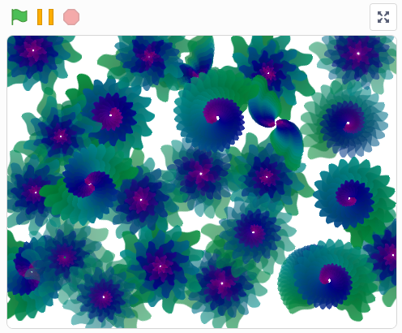
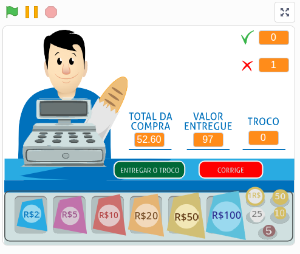
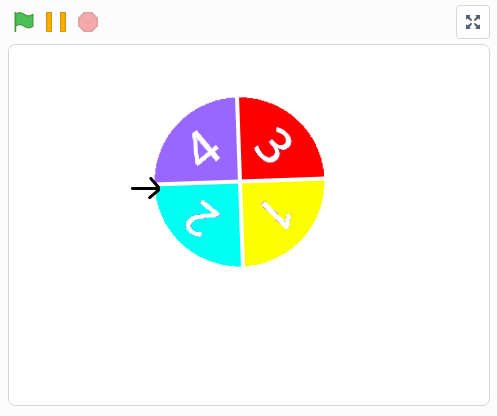

Meus projetos

Projeto Folha
Este projeto é do Scratch,desenvolvido em um dos cursos do AluraStart

Jogo do Troco
Este projeto é do Scratch,desenvolvido em um dos cursos do AluraStart

Jogo da Roleta
Este projeto é do Scratch,desenvolvido em um dos cursos do AluraStart